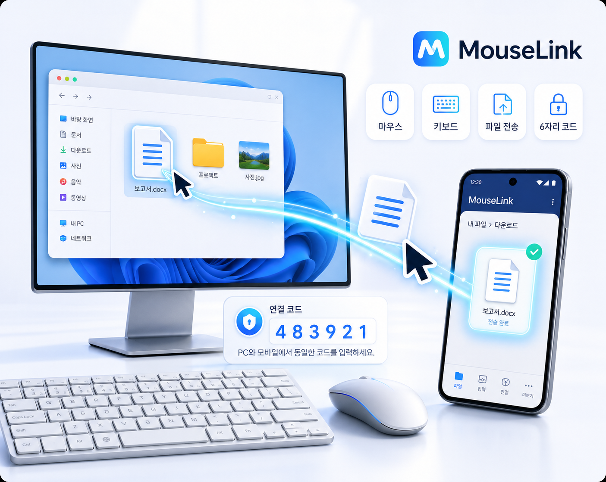

자연스러운 마우스 진입
PC 화면 가장자리에서 Android 쪽으로 커서를 넘겨 바로 조작할 수 있습니다.
Windows + Android 로컬 연결
OneMouse는 마우스 이동, 키보드 입력, 파일 전송을 하나의 연결 흐름으로 묶어 줍니다. 테스트용 기기 여러 대를 붙여 놓고 오가거나, 문서와 링크를 모바일로 빠르게 넘겨야 할 때 작업 리듬을 끊지 않고 이어갈 수 있습니다.

Overview
기존 원페이지의 긴 설명은 역할별 페이지로 나눴고, 홈에서는 OneMouse가 어떤 상황에서 빛나는지 바로 파악할 수 있도록 핵심 기능만 추렸습니다.
PC 화면 가장자리에서 Android 쪽으로 커서를 넘겨 바로 조작할 수 있습니다.
모바일 검색, 메시지 입력, 텍스트 붙여넣기 같은 반복 작업이 편해집니다.
선택된 기기로 파일을 보내고, 여러 Android 기기의 위치를 한 번에 정리할 수 있습니다.
Demo
유튜브 업로드가 끝나면 아래 영역에 임베드 URL만 넣으면 됩니다. 지금은 썸네일과 안내 문구가 들어가는 자리로 비워 두어, 페이지 구조를 미리 잡아 놓은 상태입니다.
영상 업로드 후 iframe 또는 썸네일 링크를 이 위치에 넣으면 됩니다.
Pages
홈은 소개, 가이드는 실제 연결 순서, 도움말은 문제 해결과 FAQ 중심으로 구성했습니다.
Download
실제 배포 파일 이름에 맞춰 링크만 교체하면 됩니다. 같은 Wi-Fi 환경에서 PC와 Android를 함께 실행하면 바로 페어링을 시작할 수 있습니다.
예시 파일명: OneMouse_Setup.exe
Windows 다운로드예시 파일명: OneMouse.apk
Android 다운로드